01
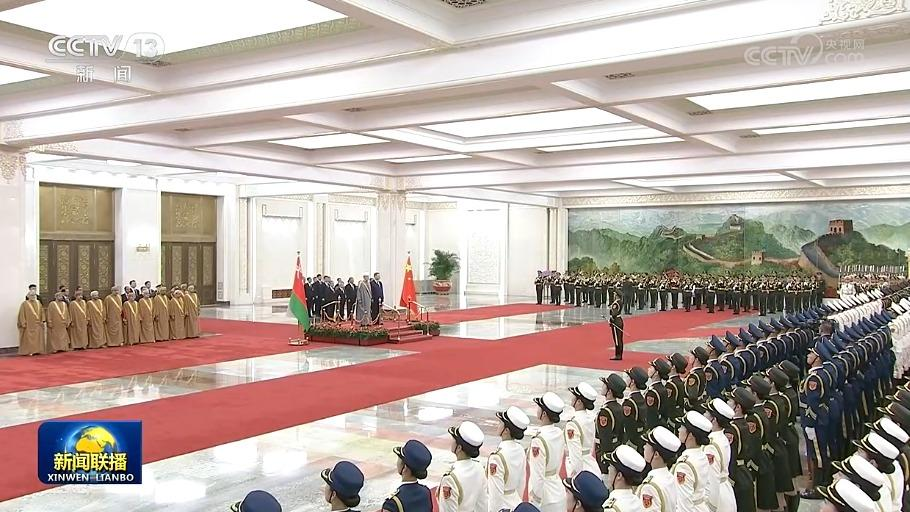
习近平举行仪式欢迎阿曼苏丹国苏丹访华
国家主席习近平2日上午在人民大会堂北大厅举行仪式，欢迎阿曼苏丹国苏丹海赛姆·本·塔里克对我国进行国事访问。
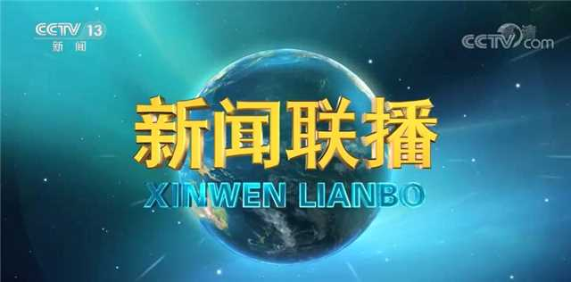

国家主席习近平2日上午在人民大会堂北大厅举行仪式，欢迎阿曼苏丹国苏丹海赛姆·本·塔里克对我国进行国事访问。
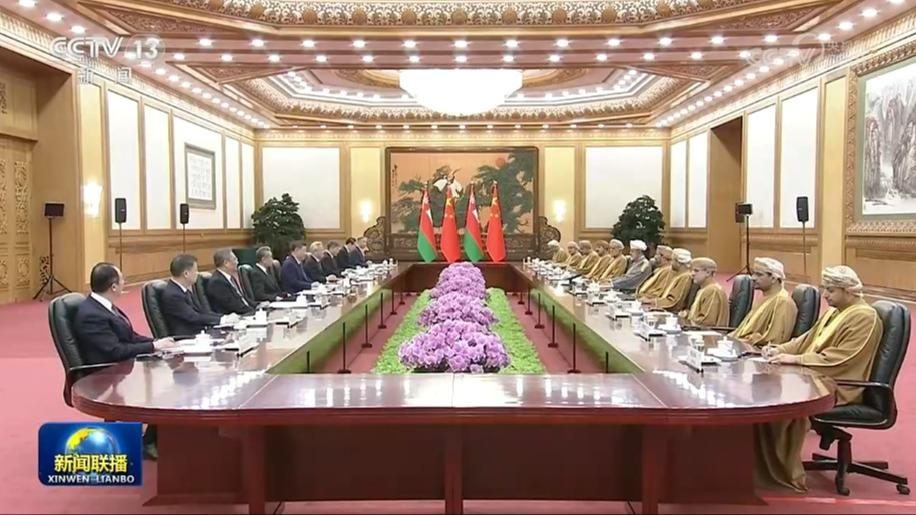
11月2日上午，国家主席习近平在北京人民大会堂同来华进行国事访问的阿曼苏丹海赛姆举行会谈。
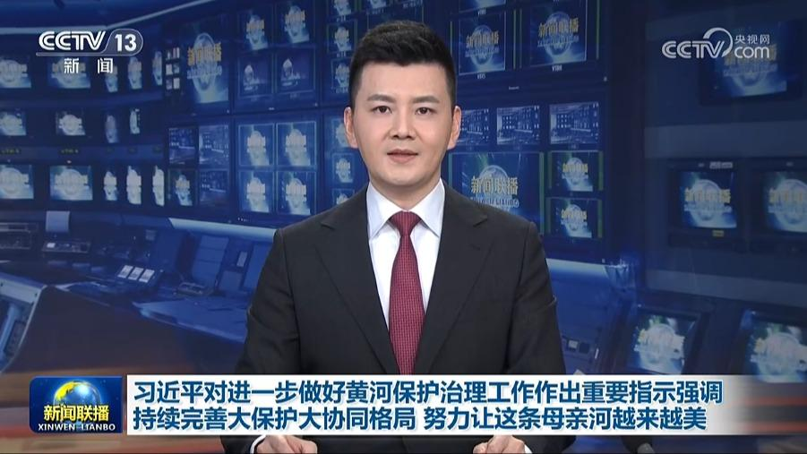
中共中央总书记、国家主席、中央军委主席习近平近日对进一步做好黄河保护治理工作作出重要指示指出，党领导人民治理黄河80年，从根本上改变了历史上“三年两决口”的状况，创造了岁岁安澜的奇迹，充分彰显了社会主义制度的显著优势。
11月2日，国家主席习近平同秘鲁总统藤森庆子互致贺电，庆祝两国建交55周年。
应国家主席习近平邀请，加蓬共和国总统布里斯·克洛泰尔·奥利吉·恩圭马将于11月3日至7日对中国进行国事访问。
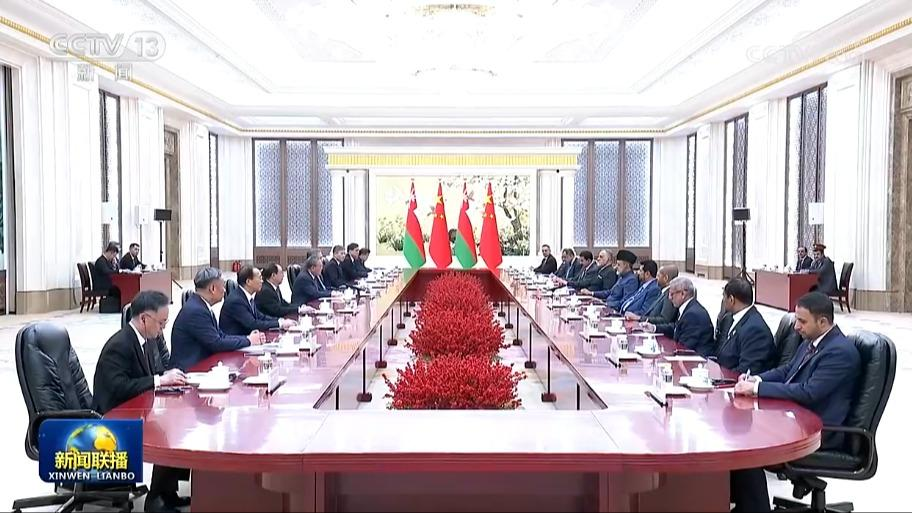
国务院总理李强2日在京会见来华进行国事访问的阿曼苏丹海赛姆。李强表示，中阿两国友谊源远流长。习近平主席同苏丹陛下举行会晤，就进一步深化中阿战略伙伴关系作出新的规划。中方愿同阿方一道弘扬传统友好，坚定相互支持，拓展能源、经贸、人文等领域合作，推动尽早结束中海自贸协定谈判，实现更高水平的互利共赢。近期，中东局势反复震荡。……
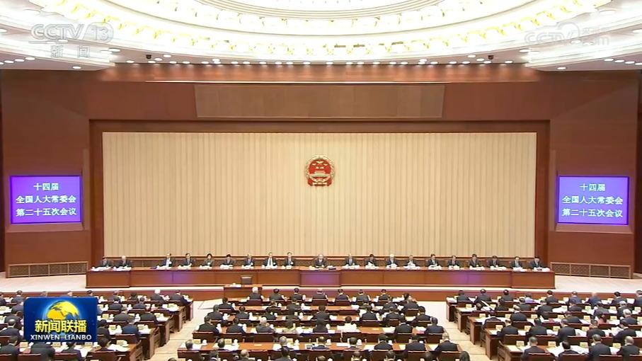
十四届全国人大常委会第二十五次会议2日上午在北京人民大会堂举行第一次全体会议。赵乐际委员长主持。
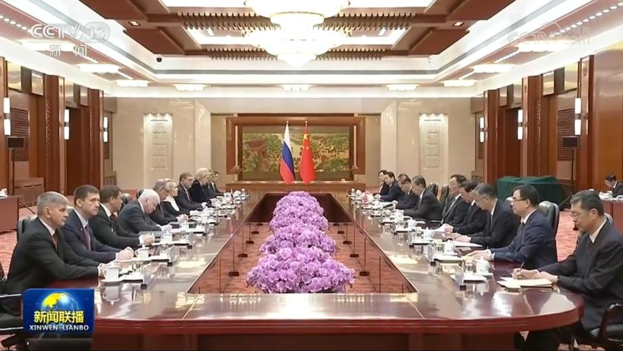
全国人大常委会委员长赵乐际2日在北京人民大会堂同俄罗斯联邦委员会主席马特维延科举行会谈。
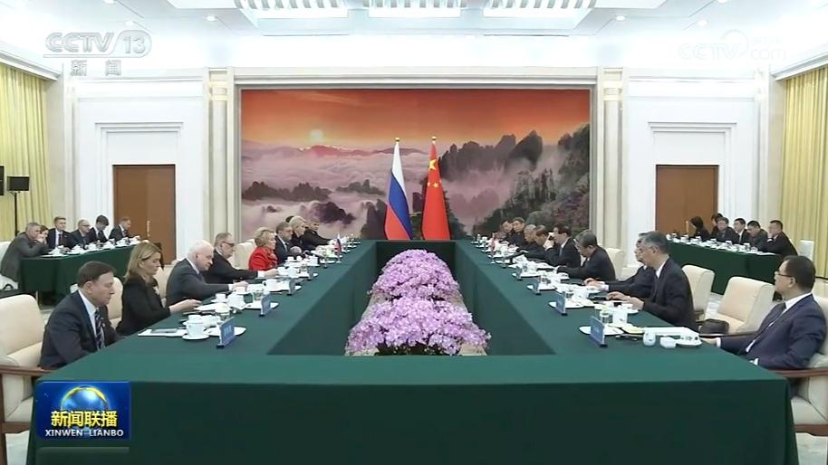
全国政协主席王沪宁2日在京会见俄罗斯联邦委员会主席马特维延科。王沪宁表示，在习近平主席和普京总统的战略引领下，中俄关系稳步向前发展。中方愿同俄方一道，以两国元首重要共识为根本遵循，保持战略定力，深化务实合作，推动中俄新时代全面战略协作伙伴关系迈向更高水平。中国全国政协愿同俄方加强交流互鉴，为促进两国关系发展作出贡献。
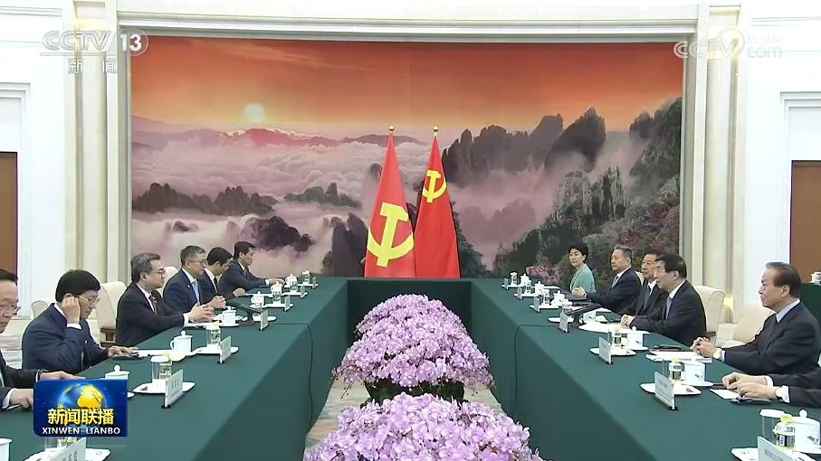
中共中央政治局常委、全国政协主席王沪宁2日在京会见由越共中央政治局委员、中央书记处书记、中央政策战略部部长阮青毅率领的越南共产党代表团。
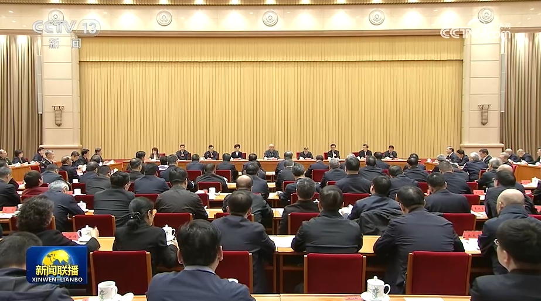
学习贯彻党的二十届五中全会精神中央宣讲团动员会2日在京召开，中共中央政治局常委、中央书记处书记蔡奇出席会议并讲话。他强调，深入学习贯彻党的二十届五中全会精神，是当前和今后一个时期全党的重大政治任务。……
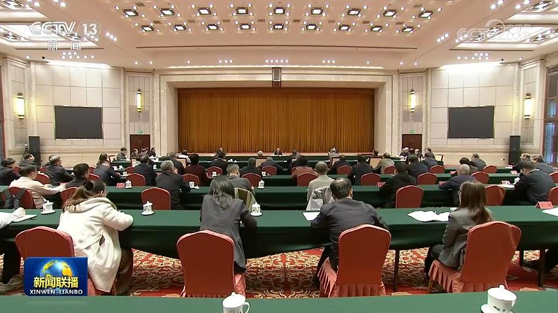
11月2日，受中共中央委托，中共中央政治局委员、中央统战部部长李干杰向党外人士通报中共二十届五中全会精神。
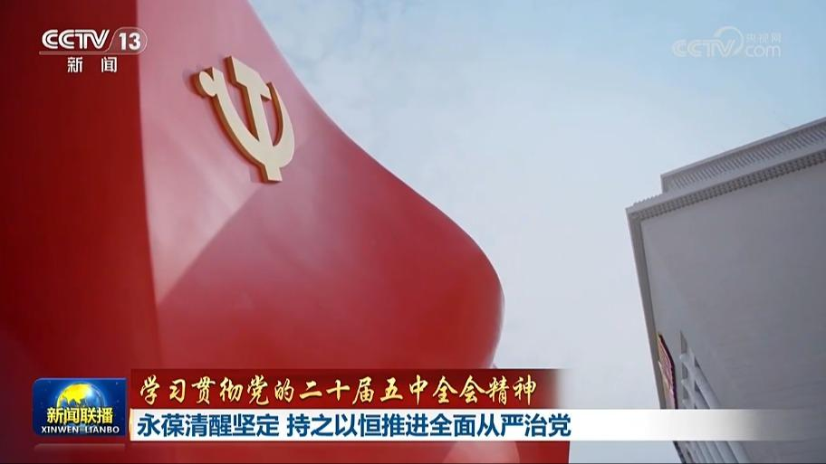
党的二十届五中全会审议通过了《中共中央关于持之以恒推进全面从严治党若干重大问题的决定》，对持之以恒推进全面从严治党作出战略部署。连日来，中央和国家机关党员干部深入学习贯彻全会精神。大家表示，要干在实处、走在前列，持之以恒推进全面从严治党，以管党治党新成效开创事业发展新局面，交出强党强国新的优异答卷。
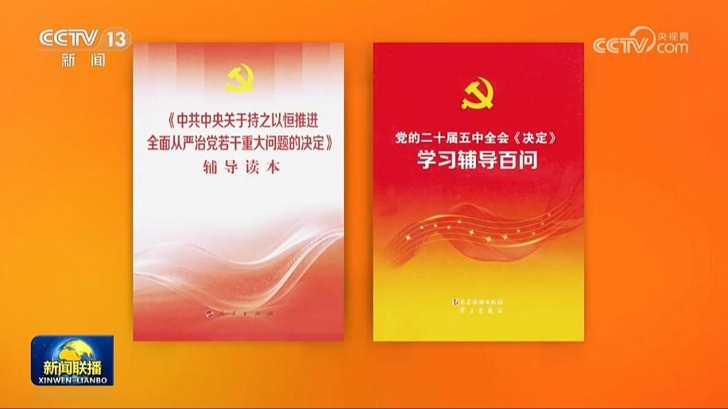
为帮助广大党员、干部、群众深入学习贯彻党的二十届五中全会精神，中央有关部门组织编写了《〈中共中央关于持之以恒推进全面从严治党若干重大问题的决定〉辅导读本》《党的二十届五中全会〈决定〉学习辅导百问》，对全会《决定》进行了全面阐释，是学习领会全会精神的权威辅导材料。书中收录了习近平总书记在全会上所作的《关于〈中共中央关于持之以恒推进全面从严治党若干重大问题的决定〉的说明》。
新华社今天（11月2日）播发长篇通讯《新征程上强党强国的光辉文献——〈中共中央关于持之以恒推进全面从严治党若干重大问题的决定〉诞生记》。
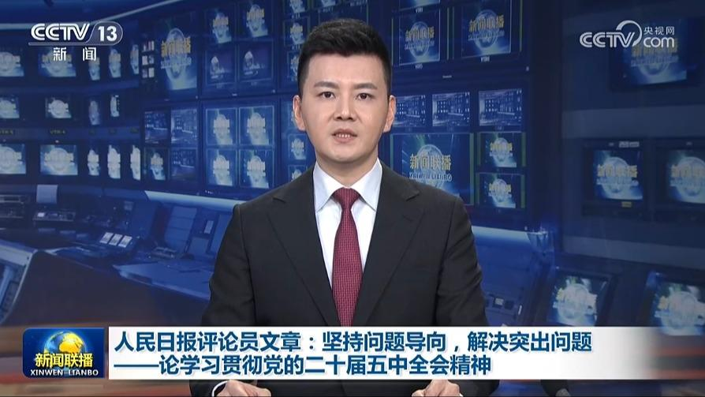
明天（11月3日）出版的《人民日报》将发表评论员文章，题目是《坚持问题导向，解决突出问题——论学习贯彻党的二十届五中全会精神》。
本台今天（11月2日）播发央视快评《增强党性是全面从严治党的根本性任务》。
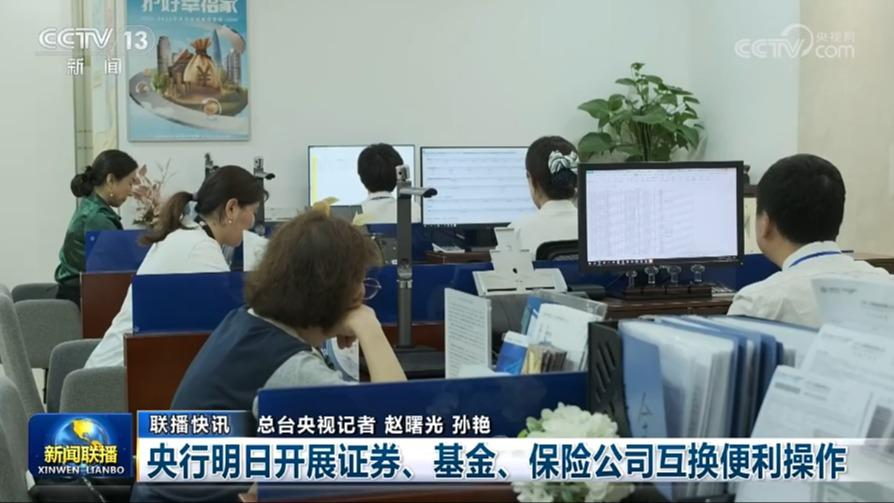
央行明日开展证券、基金、保险公司互换便利操作
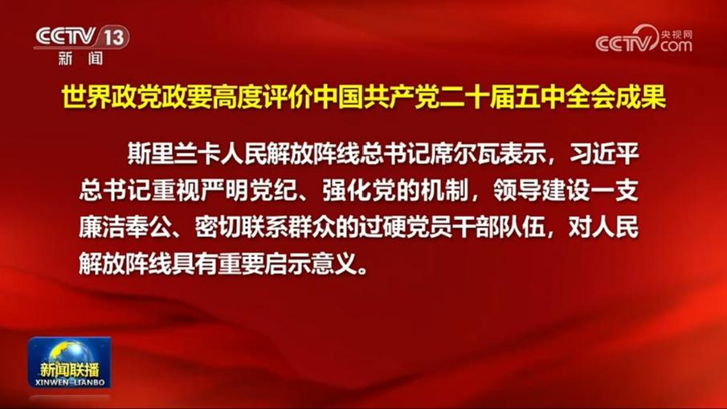
近日，世界多国政党政要以多种方式热烈祝贺中国共产党二十届五中全会胜利召开，积极评价中国共产党持之以恒推进全面从严治党的经验成效，高度赞赏习近平党建思想为世界政党建设提供重要启迪。
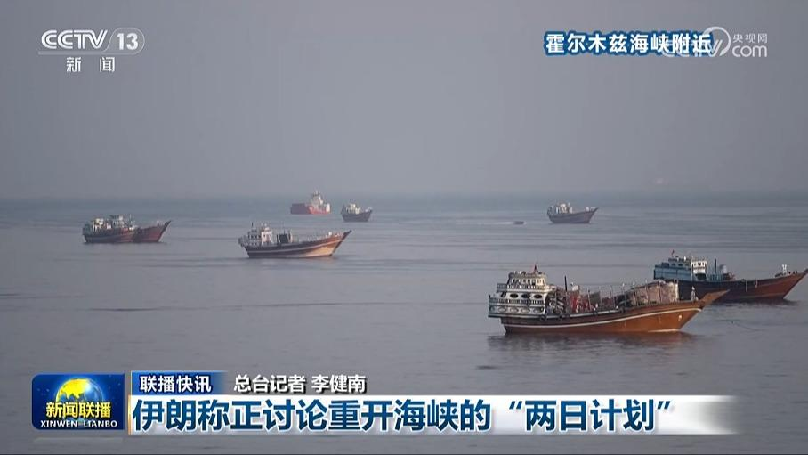
伊朗称正讨论重开海峡的“两日计划”